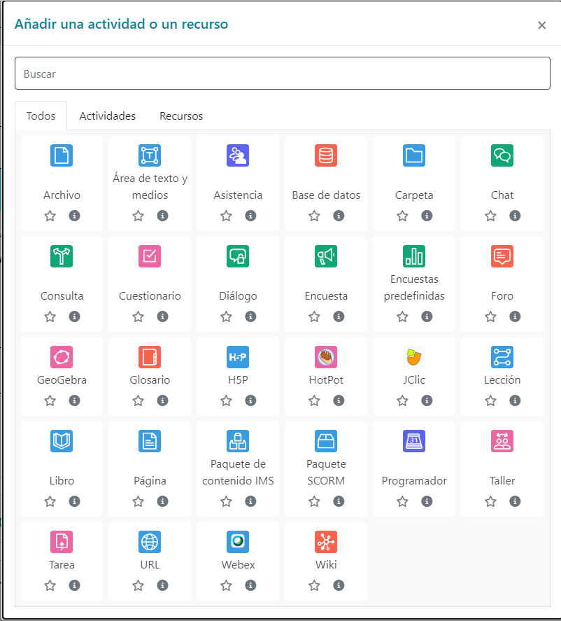

RA2. Instala sistemas de gestión de aprendizaje a distancia, describiendo la estructura del sitio y la jerarquía de directorios generada.
Criterios de evaluación:
a) Se ha reconocido la estructura del sitio y la jerarquía de directorios generada.
b) Se han realizado modificaciones en la estética o aspecto del sitio.
c) Se han manipulado y generado perfiles personalizados.
d) Se ha comprobado la funcionalidad de las comunicaciones mediante foros, consultas, entre otros.
e) Se han importado y exportado contenidos en distintos formatos.
f) Se han realizado copias de seguridad y restauraciones.
g) Se han realizado informes de acceso y utilización del sitio.
h) Se ha comprobado la seguridad del sitio.
Sistemas de gestión de aprendizaje a distancia:
– Conceptos básicos. Tipos y características.
– Elementos lógicos: comunicación, materiales y actividades.
– Instalación en sistemas operativos libres y propietarios.
– Modos de registro. Interfaz gráfico asociado.
– Personalización del entorno. Navegación y edición.
– Creación de cursos siguiendo especificaciones.
– Gestión de usuarios y grupos.
– Activación de funcionalidades.
– Realización de copias de seguridad y su restauración.
– Realización de informes.
– Elaboración de documentación orientada a la formación de los usuarios.
La educación a distancia ha dado un salto cualitativo y cuantitativo en los últimos años a raíz del espectacular crecimiento en el uso de Internet y la consolidación de los portales web de aprendizaje. Actualmente puede competir en igualdad de condiciones con los sistemas tradicionales de aprendizaje presencial, ofrece más flexibilidad y permite llegar a gente que de otra manera no tendría acceso.
No solamente Internet, sino una nueva dimensión web donde los usuarios colaboran, comparten, participan y crean contenido. Así pues, aquí es donde se enmarcan estos portales de aprendizaje, donde profesorado, alumnado y usuarios comparten un espacio común con gran diversidad de recursos para aprender, comunicarse, opinar o trabajar en grupo.
Es, pues, evidente, la importancia de conocer las posibilidades que ofrecen estos entornos para la formación. Aprender a instalarlos, dotarlos de una imagen personalizada, gestionar la seguridad y añadir nuevas funcionalidades, son algunos de los temas que trabajaréis.
Hay muchos entornos virtuales de aprendizaje, algunos de ellos son libres, otros de código abierto y también los hay de privativos. Algunos de estos son:
Moodle es un ejemplo de portal de aprendizaje, y se ha convertido en el estándar de facto entre los programas de este tipo; es libre y gratuito, y tiene detrás una gran comunidad muy activa de usuarios.
Una de las primeras tareas a las que se enfrenta el administrador cuando configura el portal es modificar su aspecto, asegurarse de que tiene una imagen cuidada, agradable y adecuada con la organización que representa.
Es habitual que el sistema mismo ofrezca diversos temas predefinidos para personalizar la apariencia del portal. Moodle tiene muchos, y además permite que los usuarios puedan elegir temas personales para ellos y a los profesores para sus cursos.
Todo esto se puede hacer de manera fácil y sencilla, pero también, para los más detallistas y exigentes, siempre hay la posibilidad de crear temas nuevos totalmente personalizados; eso sí, son necesarios conocimientos un poco más avanzados.
Definir los diferentes idiomas disponibles para el portal también es importante; hay que conocer las necesidades de los futuros usuarios, entender quién trabajará y evitar que el idioma se convierta en un impedimento. Todos los portales web de aprendizaje están traducidos a muchos idiomas.
El sistema de roles es complejo: un rol define si se puede hacer o no cualquiera de las funcionalidades o capacidades disponibles en el portal. Además, los roles se pueden definir en contextos concretos, como por ejemplo en todo el sistema, en un curso o en un foro, y los usuarios pueden tener diversos roles simultáneamente. Para resolver los conflictos que se producen se establece una jerarquía de contextos y de permisos que permite identificar unívocamente siempre si un usuario puede hacer algo.
Además de los roles, el otro pilar de los portales web de aprendizaje son los cursos; son las unidades formativas del portal, agrupan alumnos y profesores en torno a un tema y disponen de las herramientas para acompañar el proceso de enseñanza y aprendizaje.
Moodle organiza los cursos en categorías que permiten agrupar y estructurar el portal; internamente se pueden organizar de diversas maneras según convenga para su desarrollo: por temas, por semanas o en torno a un foro.
El alumnado se inscribe en los cursos, y hay diferentes formas de inscripción; por ejemplo, el profesorado puede escoger los/as alumnos/as, o bien el alumnado se inscribe al curso, siempre que sea un curso abierto a inscripciones o conozcan la clave para inscribirse. Moodle también proporciona herramientas para gestionar cursos de pago, por medio de conexiones a entidades de comercio electrónico, como por ejemplo PayPal.
El profesorado es quien administra y organiza sus cursos y añade el contenido, tanto recursos como actividades. También decide qué bloques hay y dónde se muestran, hace el seguimiento de las tareas encomendadas, modera los foros y en general es el responsable de todo lo que pasa dentro del curso.
El portal Moodle se estructura en módulos; cada módulo aporta funcionalidades que se pueden activar y desactivar en cualquier momento.
Otra de las tareas que se han de hacer durante la explotación del portal son las copias de seguridad; es indispensable, y no se puede correr el riesgo de perder todo el trabajo de los usuarios.
El software se encuentra en el directorio /moodle, y en general solo hay que guardar lo que se haya modificado para personalizar el entorno, archivos de configuración o temas añadidos. Los datos de los cursos se encuentran en el directorio /moodledata, que contiene todo el trabajo de los usuarios; por tanto, hay que guardarlo entero. La base de datos, que se llama moodle, contiene la información que gestiona y relaciona el portal y su contenido, y también se ha de copiar entera.
Aquí se muestra la pantalla de añadir recursos y actividades en Moodle, que se detallan a continuación.
Los recursos de los entornos virtuales de aprendizaje son todas aquellas herramientas que permiten a la persona formadora aportar materiales didácticos o bien crearlos para comunicar y complementar el conocimiento a su alumnado.
Estos son los algunos de los recursos que proporciona Moodle y que el profesorado, en modo edición, pueden añadir a sus cursos:
Modo edición
El modo edición es imprescindible para modificar el contenido de los cursos. Al activarlo aparecen un conjunto de iconos asociados a cada ítem del curso y a los bloques, que nos permitirán modificar su colocación y editar los contenidos didácticos. También nos permite añadir nuevos contenidos al curso. Para activarlo o desactivarlo hay que pulsar el botón “Activa edición” o “Desactiva edición”.
Actividades
Las actividades de los entornos virtuales de aprendizaje permiten al alumnado poner en práctica de manera interactiva los conocimientos adquiridos, comprobar su progreso, consolidar su aprendizaje, participar y trabajar en grupo.
El alumnado participa generando y entregando documentos, respondiendo a preguntas, añadiendo contenido o incluso dando su opinión.
Las personas formadoras crean actividades dirigidas al alumnado y pueden recibir el resultado para evaluarles y hacerles un seguimiento.
Hay una gran variedad de actividades diferentes. Pueden ser de dos tipos: individuales y colaborativas.
Algunos ejemplos de actividades individuales son:
Una pregunta con respuesta numérica espera que el estudiante introduzca un número permitiendo un margen de error. Se habilita un rango de posibles respuestas acertadas. Por ejemplo, si la respuesta correcta es 50 con un margen de error de 5, será correcto cualquier número entre 45 y 55.
Algunos ejemplos de actividades colaborativas son:
La palabra SCORM...
… es un acrónimo de Shareable Content Object Reference Model (modelo de referencia de objetos compartibles de contenido). Es un formato estándar consensuado de objetos de aprendizaje.
Las herramientas de comunicación en los portales web de aprendizaje son un elemento básico en el proceso de aprendizaje; la comunicación con el profesorado, las dudas que aclaran los/as compañeros/as o las discusiones y el debate son necesarios y ayudan al alumnado.
Herramientas de comunicación
Las herramientas de comunicación de los portales web de aprendizaje son todas aquellas que permiten a los agentes que intervienen comunicarse entre ellos. La comunicación puede ser en directo o en diferido.
Estas son algunas de las herramientas existentes para la comunicación de los portales web de aprendizaje:
A parte hay algunas actividades que se pueden hacer servir como herramientas de comunicación, como las encuestas o las cuestiones.
Un rol es una colección de permisos definida para todo el sistema que podéis asignar a los usuarios en contextos específicos. La combinación de rol y contexto define las acciones que el usuario puede hacer en las páginas. Tratándose de un entorno de aprendizaje, los roles más comunes que ofrece Moodle son el de profesor/a y estudiante además del de administrador/a para gestionar el portal.
Antes de poner en marcha un sistema informático, hay que configurarlo, y dependiendo de la complejidad que tenga será una tarea más o menos tediosa.
En un portal web, por ejemplo, se ha de personalizar el aspecto. Es importante que el entorno tenga una estética adecuada con el resto de aplicaciones de la organización en la que se quiere integrar; por ejemplo, hay que poner el logotipo o utilizar los colores apropiados.
El aspecto de una aplicación marcará la primera impresión de los futuros usuarios; por tanto, hay que cuidarlo y personalizarlo, y es importante que sea agradable y que tenga los elementos necesarios que lo relacionen con la organización que representa. Por ejemplo, el logotipo ha de estar bien visible en la cabecera.
La mayoría de portales web de aprendizaje permiten modificar el idioma, e incluso dan la opción a los usuarios para seleccionarlo. Habréis de analizar a quién está dirigido vuestro portal y en función de ello cargar los idiomas correspondientes. Tampoco tiene mucho sentido cargar todos los idiomas disponibles si solo tendréis usuarios catalanes, por ejemplo: en este caso con el valenciano, castellano e inglés sería suficiente.
Página de inicio
La primera página o página de inicio es aquella que se mostrará al usuario antes o después de entrar al portal.
Normalmente la página de inicio contiene el nombre del portal en la cabecera, un calendario y la lista de categorías con los cursos disponibles. También hay un enlace que permite entrar a los usuarios que ya están registrados o acceder como visitante sin necesidad de registrarse.
Los visitantes tienen privilegios limitados y solo tienen acceso a la información que el administrador y los creadores de los cursos deciden. En algunos casos, por ejemplo, puede interesar restringir el acceso a los cursos a los usuarios registrados y evitar que visitantes y curiosos accedan a la información del portal.
El contenido de la primera página se puede modificar. Podéis añadir una breve descripción del portal, mostrar noticias, mostrar las categorías de los cursos limitando la cantidad que se visualiza.
Para poner la página de registro como página de inicio, hay que activar la opción que obliga a los usuarios a entrar (forcelogin). Se configura en el ítem Administración del sitio/Seguridad/Normativa del sitio del bloque de Configuración.
El contenido de la primera página se configura en el ítem Administración del sitio/Primera página/Parámetros de la primera página del bloque de Configuración.
Página de cada usuario
La página de cada usuario o Home page en inglés es la página que cada usuario ve cuando accede a sus cursos.
Normalmente contiene el bloque central con los cursos a los que está inscrito o bien la jerarquía de categorías; el bloque de Navegación con el acceso a los diferentes cursos; y el bloque de Administración donde puede editar su perfil y otras acciones según el rol del usuario. Otros bloques pueden aparecer en función de la configuración realizada por el administrador.
La página de cada usuario es configurable por el administrador para todos los usuarios. Normalmente aparecen los cursos a los que están inscritos en el bloque central, el bloque de navegación, el bloque de configuración y otros elementos como avisos de los mensajes en el foro no leídos o tareas pendientes de entregar.
Esta página también puede ser configurable para cada usuario mediante el botón Personaliza esta página. En caso de necesitarlo, también se puede volver a la página por defecto impuesta por el administrador del portal.
Perfil de usuario/a
El perfil de usuario/a es la información almacenada de todo usuario/a autenticado/a en el portal Moodle.
Es una colección de campos agrupados por categorías, como datos generales, imagen, intereses y otros datos. Algunos campos son obligatorios y por tanto el/la usuario/a los ha de introducir en el momento de autenticarse. El/La administrador/a puede decidir la obligatoriedad o no de los campos y además indicar cuáles serán visibles para el resto de usuarios/as.
Cada usuario/a puede configurar su perfil yendo a Configuración de mi perfil/Editar perfil del bloque de Configuración.
El administrador puede añadir nuevos campos al perfil yendo a Administración del sitio/Usuarios/Cuentas/Campos del perfil de usuario. También puede bloquear determinados datos del perfil para imponer un valor y que el usuario no pueda modificarlo. Hay que ir a Administración del sitio/Conectores/Autenticación/Autenticación basada en el correo electrónico.
Es muy importante que el administrador revise la Normativa del sitio para establecer la obligatoriedad de autenticarse para visualizar los cursos, los perfiles de los usuarios y sus imágenes, además de otros parámetros relacionados con la protección de datos como qué roles serán visibles. Hay que ir a Administración del sitio/Seguridad/Normativa del sitio.
Cualquier página de Moodle está organizada por bloques. Un bloque no es más que un conjunto de informaciones y enlaces a acciones agrupadas en un recuadro.
Bloques
Los bloques fundamentales de Moodle son el de Navegación, Configuración y el bloque Principal donde pondremos el contenido del curso.
Moodle dispone de otros bloques adicionales que nos permiten acceder a otras informaciones. El administrador configura qué bloques verá cada usuario y en qué disposición aparecerán en las páginas indicando también bajo qué contexto.
Como profesorado podemos gestionar la estructura de bloques de los cursos que administramos, tanto para añadir o quitar como hacer una nueva disposición. La capacidad que tenemos como profesores depende del tema utilizado en el portal y de la configuración hecha por el administrador que puede fijar la presencia de determinados bloques. Los estudiantes en cambio no pueden añadir ni borrar pero pueden ocultarlos.
Moodle se ha adecuado a la proliferación del uso de tabletas y otros dispositivos móviles y por tanto sus páginas son responsive adaptándose a las diferentes medidas de las pantallas haciendo que los diferentes bloques laterales salgan al final de la página.
El administrador gestiona los bloques instalados y los configura yendo a Administración del sitio/Conectores/Bloques/Gestión de bloques del bloque de Configuración.
Temas
Dentro del paquete estándar de Moodle se incluyen algunos temas por defecto. Un tema define la apariencia de todo el portal, pero cada curso o usuario también puede tener su tema propio.
Es posible previsualizar un tema antes de activarlo y ver cómo se verá el portal si finalmente lo seleccionamos.
Los temas están disponibles en el ítem Administración del sitio/Apariencia/Temas del bloque de Config.
Desde el menu de administrador se puede configurar la apariencia del portal y, por ejemplo, escoger un tema que le dé un aspecto personalizado.
Los temas se aplican según su ámbito: de sitio, que elige el administrador y se aplica a todo el portal; de usuario, escogido por el usuario; y de curso, que define el administrador del curso. Las prioridades de más a menos prioritario son curso, usuario y sitio. En caso de conflicto se aplica el tema del ámbito más prioritario.
A parte de los temas predefinidos en el paquete estándar de Moodle, hay muchos otros que desarrolla la siempre activa comunidad Moodle. Estos se ofrecen gratuitamente bajo licencia GPL.
Se pueden bajar nuevos temas desde la web https://moodle.org/plugins/browse.php?list=category&id=3.
En general los temas están comprimidos en formato ZIP. Para instalar un nuevo tema hay que descomprimir el fichero y subir el contenido al servidor web, a la carpeta theme de Moodle, dentro de una nueva carpeta con el nombre del tema.
El portal web Moodle permite añadir nuevos idiomas y por tanto configurar el entorno con el que nos interese. Esta tarea se realiza como administrador. Además, cada usuario puede escoger su idioma preferido editando su perfil.
Para gestionar los paquetes de idioma hay que entrar como administrador. Desde Administración del sitio/Idioma/Paquetes de idioma del bloque de Configuración, tenéis acceso a la instalación, actualización y desinstalación de todos los idiomas disponibles.
También se puede instalar manualmente. Desde el menú de descargas de la web de Moodle (https://download.moodle.org/langpack/2.8/) os podéis bajar los diferentes idiomas (formato ZIP). Observaréis que está traducido a muchos idiomas, lo que os puede dar una idea de la difusión que tiene.
Nada más hace falta descomprimir el contenido del fichero en el directorio moodledata, dentro de una carpeta llamada lang, que habrá que crear en caso de que no exista.
Para configurar el idioma del entorno podéis acceder a los parámetros de idioma dentro del de Administración del sitio/Idioma/Parámetros de idioma del bloque de Configuración.
Pasos para instalar un idioma:
Nos vamos en la administración del sitio, a language packs y seleccionamos el idioma que queremos instalar:
Nos indica que se ha instalado correctamente:
Una vez instalado ya podemos seleccionarlo:
Guardamos los cambios.
Una vez hecho esto podemos cambiar el idioma del usuario.
En cualquier sistema informático multiusuario hay que establecer unas normas de seguridad que garanticen que cada usuario solo puede hacer aquello que se le permite. Además, es necesario que haya diferentes tipos de usuarios, unos con más privilegios que otros según sus funciones y responsabilidades.
Por rol se entiende un conjunto de permisos y prohibiciones agrupados bajo un nombre. Los roles se asignan a los usuarios, y un usuario puede tener más de un rol, dependiendo del contexto que determinará qué podrá hacer en el contexto correspondiente.
Por ejemplo, un usuario puede ser alumno/a de un curso mientras que al mismo tiempo puede ser profesorado de otro curso. Con los roles predefinidos es suficiente para gestionar la mayoría de situaciones.
Tabla de Roles predefinidos en Moodle
| Definición | Descripción |
|---|---|
| Administrador | Los usuarios que disponen de este rol pueden hacerlo todo en el sitio y en cualquier curso. Es aconsejable economizar este rol entre uno o pocos usuarios. |
| Gestor | Es un rol similar al administrador pero que permite modificar sus capacidades. Por tanto es adecuado para usuarios que tengan que administrar algunas partes del portal. |
| Creador de cursos | Con este rol se pueden crear nuevos cursos. En un entorno donde esta tarea no represente un volumen grande de trabajo la puede asumir el administrador o algún gestor, y entonces no hace falta hacer servir este rol. |
| Profesor | El profesor es el administrador del curso, puede hacer todo lo que esté permitido dentro, como añadir actividades y poner notas a los alumnos, por ejemplo. Normalmente cada curso tendrá como mínimo un usuario con el rol de profesor, que es el responsable. El responsable de crear el curso, el administrador o el creador del curso, indican qué usuarios tienen este rol. |
| Profesor no editor | Este profesor puede enseñar en un curso y poner las notas a los estudiantes pero no tiene permiso para gestionar el material disponible. No puede cambiar las actividades. |
| Estudiante | El rol de estudiante da privilegios de lectura en los cursos y el sitio, y unos pocos de escritura para aquellas funcionalidades que requieren interacción, crear una entrada en una bitácora, un comentario en un foro, enviar un archivo de una tarea publicada por el profesor o enviar un mensaje de correo. Los profesores pueden indicar qué usuarios son estudiantes del curso, pero este rol también se puede asignar automáticamente a los usuarios que entran nuevos a un curso. |
| Visitante | Este rol tiene estrictamente privilegios solo de lectura. La idea es mostrarle lo que hay disponible pero sin permitir que aporte nada. |
| Usuario autenticado | Cualquier usuario del sistema que entra al portal pertenece a este rol como mínimo. Puede gestionar su perfil, enviar mensajes y ver las bitácoras de los otros usuarios. |
| Usuario autenticado en la primera página | Cualquier usuario del sistema que entra al curso de la primera página. |
La gestión de roles está disponible en Administración/Administración del sitio/Usuarios/Permisos del bloque de Configuración.
Un mismo usuario en un mismo contexto puede tener dos roles o más; por ejemplo, un alumno que entra al portal será estudiante y al mismo tiempo usuario autenticado. En este caso puede haber permisos contradictorios entre los diferentes roles, que el sistema ha de solucionar.
Se establece una jerarquía de contextos dentro del portal, que hay que conocer para entender cómo se aplican los permisos de los roles y se resuelven las contradicciones. En orden descendente los contextos son:
Sistema / Usuario / Categoría / Curso / Módulo de actividad / Bloque
El sistema define todas las funcionalidades (capacidades) disponibles para los usuarios; por ejemplo, crear cursos o ver los perfiles de los otros usuarios. Cada rol ha de definir los permisos para todas estas funcionalidades.
Hay cuatro tipos de permisos disponibles:La funcionalidad o capacidad indica qué quiere hacer el usuario, el contexto define dónde lo quiere hacer y el permiso si lo puede hacer. Los roles de los usuarios, que se definen en un contexto, determinan los permisos para todas las funcionalidades. Cualquier usuario tiene como mínimo un rol en cualquier contexto. En caso de conflicto los permisos más restrictivos siempre prevalecen sobre los menos restrictivos.
Los cursos, junto con los usuarios, son los pilares del portal. Un curso se puede asimilar a un aula virtual. Los cursos se organizan en categorías, por temática o nivel similar, y se pueden crear subcategorías para estructurar el portal y facilitar la búsqueda de cursos.
En el portal inicialmente se crea la categoría “miscelánea” y, de hecho, aunque la eliminéis se volverá a crear automáticamente si no hay al menos otra categoría.
Dentro de un curso el alumnado y el profesorado disponen de un espacio común con recursos didácticos, actividades y herramientas que les permiten comunicarse.
Tanto los usuarios administradores como los que tienen el rol de creadores de cursos pueden crear cursos pero solo los administradores pueden gestionar las categorías.
Como a ejemplo de estructura de categorías y cursos podríamos pensar en un Instituto de FP. Podríamos tener una categoría para cada familia profesional y dentro de cada una, una subcategoría con cada ciclo formativo. Los cursos serían los módulos y estos se asignarían a su subcategoría.
La administración de cursos y categorías está disponible en el ítem Cursos/Añade/edita cursos y Cursos/Añade una categoría del menú Administración del sitio del bloque Configuración.
El administrador puede definir una estructura general del curso, indicando unos parámetros por defecto y definiendo los bloques laterales que se visualizarán. Después los responsables del curso, el profesorado, pueden modificar esta configuración para adaptar el curso a sus necesidades.
Una vez el administrador ha finalizado las tareas globales, ha establecido la estructura de categorías y la configuración general de los cursos, cada profesorado o responsable del curso puede configurar los diferentes parámetros individuales de cada curso, a través del ítem Edita parámetros del menú Administración del sitio del bloque Configuración. Estos se dividen en los grupos siguientes:
El formato de los cursos hace referencia a la manera como se organiza el bloque central del curso:
El formato semanal y de temas divide el curso en secciones que representan respectivamente semanas o temas.
El formato social se organiza alrededor de un foro principal en el que los participantes pueden debatir.
El formato de actividad única donde el curso solo tiene una sección y permite al profesorado crear una única actividad del tipo que se haya indicado en la configuración.
Se puede acceder a estos parámetros y modificarlos en cualquier momento desde el bloque de administración. Generalmente la información del curso la definirá el profesorado, que es quien lo conoce mejor.
Los cursos se estructuran en una cabecera, los bloques laterales que dan acceso a diversas funcionalidades de los usuarios y el bloque principal en el centro con los contenidos del curso.
Ayuda de Moodle
Para la mayoría de parámetros del Moodle tenéis accesible una breve ayuda que os puede servir para entender el significado de cada parámetro en concreto. Esta ayuda se abre seleccionando el interrogante que hay al lado del parámetro.
Uno de los bloques laterales importantes es el de navegación que permite acceder habitualmente al perfil de usuario, a los cursos a los que está inscrito, a la página inicial y navegar por el curso actual. El contenido de este bloque dependerá del rol del usuario, dónde esté en el portal, si está en un curso o en la página inicial, y cómo lo haya configurado el administrador del sitio.
El otro bloque lateral es el bloque de configuración que habitualmente contiene la administración del sitio, si el usuario es administrador, y la administración del curso si estamos en el curso y tenemos un rol que nos permita administrar el curso. Además, nos permite editar nuestro perfil y otras acciones que haya configurado el administrador del sitio.
Otros bloques laterales que podemos visualizar en los cursos son:
Los administradores de un curso disponen de la opción de activar la edición. Esta funcionalidad permite desplazar bloques, ocultarlos o borrarlos y añadir nuevos recursos y actividades.
Una vez el curso se ha creado, hay que añadir al alumnado. Hay tres modos de inscripción en los cursos: el profesorado selecciona al alumnado, el alumnado se inscribe al curso ellos/as mismos/as o se hace una inscripción masiva a partir de algún sistema de datos externo.
La inscripción manual a un curso permite al profesorado seleccionar los/as participantes del curso entre los usuarios/as del portal y les asigna el rol correspondiente; por ejemplo, el alumnado tendrá el rol de estudiante.
El profesorado puede dar de alta a los/as participantes en los cursos que administra desde el ítem Usuarios/Usuarios inscritos del menú Administración del curso del bloque Configuración.
La inscripción automática permite a los/as usuarios/as del portal seleccionar el curso e inscribirse, mediante una clave de inscripción si es necesario. Hay que asegurarse de que se muestra en la página inicial la lista de cursos a los/as usuarios/as del portal para que los/as puedan seleccionar.
Esta inscripción permite crear una instancia para cada rol que queramos gestionar. Por ejemplo, nos puede interesar crear una instancia de autoinscripción con el rol de estudiante y otra con el rol de profesores no editores. Además, si el curso tiene configurado los grupos, permite la inscripción automática de los/as estudiantes a grupos poniendo diferentes claves de inscripción.
La inscripción masiva a cursos se puede realizar mediante la sincronización de cohortes para la cual el/la administrador/a ha de instalar el plugin correspondiente. Una cohorte se puede definir como un conjunto de usuarios/as provenientes de un sistema externo. Además, también se permite la inscripción masiva de estudiantes de otros cursos de la misma plataforma Moodle.
Una funcionalidad interesante que también se puede gestionar desde las inscripciones es el pago de los cursos; estos se hacen por medio de entidades externas que garantizan la seguridad de las transacciones. Moodle permite el pago vía PayPal. Hay que tener instalado el plugin correspondiente y que el administrador configure el curso para que permita este tipo de inscripción. El profesorado puede decidir el precio.
A parte de las inscripciones vistas, el profesorado puede habilitar el acceso al curso a los visitantes sin clave.
El contenido de un curso es responsabilidad del profesorado, en ningún caso del administrador del portal. De todas maneras hay que conocer cómo se hace y qué funcionalidades hay disponibles para poder aconsejar a los usuarios y resolver las incidencias que puedan aparecer.
El Moodle permite añadir recursos y actividades. La diferencia básica es que los recursos incluyen todo aquello que se muestra estáticamente a los/as estudiantes relacionados propiamente con los contenidos del curso, mientras que las actividades necesitan la participación activa del estudiante. Todo el contenido del curso hay que ponerlo en el bloque central.
Con los siguientes recursos que ofrece el paquete estándar, el profesorado presenta sus contenidos:
El Moodle también dispone de otros recursos que nos ayudan a organizar los contenidos del curso. Los que ofrece el paquete estándar son:
Respecto a las actividades, el Moodle nos ofrece algunas que permiten al profesorado formular preguntas y que los/as estudiantes respondan y otras donde el alumnado entrega su tarea que puede ser un archivo o conjunto de archivos, una respuesta en línea o bien un enlace.
Con las Consultas, Encuestas, Lecciones y Cuestionarios el profesorado formula preguntas de diferentes tipologías y así evalúa a los/as estudiantes. También pueden servir como retroalimentación para el profesorado respecto a cómo están avanzando los/as estudiantes en su aprendizaje. En el caso de las Lecciones, el sistema permite hacer una adaptación del aprendizaje del alumnado itinerante la secuencia de contenidos y preguntas en función de las respuestas.
El Taller y la tarea permiten al profesorado dar instrucciones al alumnado, recoger los trabajos entregados, evaluarlos y dar la retroalimentación. El taller permite la evaluación entre compañeros a partir de la rúbrica y la revisión de la nota por parte del profesorado.
Para crear contenidos colaborativamente entre los compañeros y con la intervención del profesorado, el Moodle ofrece varias herramientas como Base de Datos (recopilación de datos de varios tipos como revistas, direcciones web, textos, imágenes, etc.), Glosario (recopilación de términos) y Wiki. Son actividades que pueden servir como contenidos del curso. La Wiki puede ser útil para que los/as estudiantes creen sus propios apuntes.
Todo curso, cuando se crea, solo dispone en el bloque central de un único elemento, el Foro de avisos y noticias. Se trata de una herramienta de comunicación unidireccional donde solo los/as profesores/as pueden escribir y los/as estudiantes leer.
Además, el profesorado puede añadir otros elementos de comunicación como el Foro donde tanto los/as profesores/as como los/as estudiantes pueden escribir y el Chat donde se establece una comunicación directa. Ambos elementos de comunicación sirven para resolver dudas entre los/as compañeros/as y acercarlos en su proceso de aprendizaje. Es importante que el profesorado estimule el uso de estas herramientas para compensar la lejanía física de los/as estudiantes.
La organización de los estudiantes en grupos permite que estos realicen tareas como grupo. Algunas de las actividades y herramientas de comunicación que hemos visto facilitan el trabajo grupal, indicándolo en su configuración. Por ejemplo, se puede crear un foro donde las conversaciones solo sean visibles por los miembros de un mismo grupo o bien la actividad Tarea que permite la entrega por grupo.
Todos los recursos o actividades del curso puede ser editados de nuevo para modificar algún parámetro, recolocarlo en el bloque central tanto moviéndolo horizontalmente como verticalmente, asignarle roles y si es necesario ocultarlo al estudiante.
El paquete estándar de Moodle contiene un conjunto de funcionalidades bastante amplio, que se pueden activar y desactivar en cualquier momento.
El administrador puede gestionar los módulos desde el ítem Administración del sitio/Conectores, del bloque de Configuración.
Desde Moodle se pueden ver y descargar las nuevas versiones de los módulos disponibles; todos son gratuitos y en muchos casos los desarrollan terceras personas ajenas al equipo de desarrollo del portal pero que deciden compartir el sus módulos y utilidades con la comunidad. Para ello, acceder a descargas y seleccionar “https://moodle.org/plugins/”.
Para añadir un nuevo módulo, hay que comprobar que es compatible con la versión del Moodle que tenéis instalada, y después leer atentamente la documentación de instalación.
Actualizar todo el portal para poder disfrutar de las prestaciones de las nuevas versiones de Moodle es una tarea que en algún momento habrá que hacer, y es indispensable si se quiere mantener un portal actualizado y dinámico. Sin embargo, esta actuación no está exenta de riesgo; se puede decir que es crítica, y no se debe hacer sin tomar precauciones.
Antes de empezar la actualización del portal hay que prepararse para la peor situación y hacer copias de seguridad de todo el sistema, los ficheros de datos, la configuración y la base de datos, de manera que si algo no funciona correctamente se pueda restaurar el sistema anterior sin pérdida de información.
Los cursos disponen de una herramienta de copia de seguridad que permite a los administradores o profesores empaquetar la información del curso en un fichero comprimido extensión MBZ para distinguirlos de la extensión ZIP. De esta manera pueden guardar los datos con la periodicidad que les convenga o exportar el curso a otro lugar Moodle.
La información que se puede incluir en una copia de seguridad de un curso es: la estructura completa o parcial (actividades y recursos), los datos de usuario asociados a las actividades, los usuarios del curso y sus roles, los registros de actividad, los ficheros de usuario y del curso, los eventos, los bloques y las calificaciones.
Se puede realizar la restauración de un curso a partir de una copia de seguridad de un curso anterior o de otro curso, o bien de un curso de otro portal Moodle. La restauración de un curso implica la creación de un nuevo curso con la información de la copia de seguridad.
La opción para hacer copias de seguridad de un curso está disponible en el ítem Administración del curso/Copia de seguridad del bloque de Configuración.
La opción para hacer la restauración de las copias de seguridad de un curso está disponible en el ítem Administración del curso/Restaura del bloque de Configuración.
Moodle también dispone de una herramienta de copia de seguridad de todo el portal, que permite a los administradores salvaguardar todas las bases de datos asociadas al portal. Estas copias de seguridad se pueden restaurar para llevar el portal al punto en que se encontraba cuando se realizó la copia de seguridad.
El portal se divide en tres grandes áreas de información que se pueden tratar de manera diferenciada a la hora de planificar las copias de seguridad:
La programación (directorio moodle) es el código de la aplicación, los ficheros de configuración del sitio, los temas modificados, los idiomas añadidos y otros conectores añadidos. De la programación hay que guardar copia de todo lo que se haya modificado para personalizar el entorno. El resto está disponible en los repositorios del Moodle y se puede bajar de la web.
Los archivos que los usuarios suben al servidor (directorio moodledata). Estos archivos son los recursos de los cursos y las tareas de los estudiantes; en definitiva, todo el trabajo de los usuarios. En general habrá un gran volumen de datos de los cursos, dependiendo del número y de la actividad que tengan, pero esta información es muy importante; perderla puede representar perder muchas horas de trabajo de todos los usuarios, alumnos y profesores. Tratándose de un directorio de datos, se puede hacer servir cualquier sistema de copia de ficheros correspondientes.
La base de datos. Esta registra la información del sistema y sus interrelaciones, los usuarios y los cursos, qué roles tiene cada uno, los mensajes de los foros o las palabras de los glosarios, por ejemplo; también gestiona toda la relación entre el portal y los documentos de los usuarios. La base de datos del portal se llama habitualmente moodle.
El fichero de configuración del Moodle (config.php) puede comprobar dónde se encuentran en el Moodle los anteriores ítems.
El administrador dispone de algunas herramientas para controlar el funcionamiento correcto del portal; le permiten detectar posibles errores, problemas de seguridad, anticipar necesidades futuras o pensar en las mejoras que se pueden introducir.
Los informes y registros del sitio se acceden desde el ítem Administración del sitio/Informes, del bloque de Configuración.
Registros de actividad
Un registro de actividad hace referencia a un conjunto de información estructurada generalmente en forma de tabla, y en el que cada una de las filas contiene una referencia horaria que indica en qué momento ha sucedido.
Para activar los registros de actividad hay que ir a Administración del sitio/Informes/Registro de actividad del bloque de Configuración.
Los registros de actividad se pueden filtrar por fecha, usuario, curso, módulo, acción y dirección IP. Los registros de actividad se pueden exportar a un fichero CSV.
Informes y registros del profesorado
Para el profesorado es interesante poder obtener información sobre la participación de los estudiantes en sus cursos. Estos pueden ser:
Registros en directo: muestra información sobre la actividad al curso durante la última hora.
Informes de actividad: Se trata de informes a los que no se aplica ningún filtro. Mostrará por tanto toda la actividad del curso. Los elementos (actividades, recursos, elementos de comunicación) se muestran en el mismo orden que aparecen en las secciones del curso. La columna Visualizaciones nos muestra el número de veces que el elemento ha sido visitado. La columna Último Acceso muestra la última fecha en que se ha accedido al elemento y el tiempo transcurrido desde el último acceso.
Participación al curso: proporciona un listado que se puede ordenar y que muestra la participación de los estudiantes en los cursos, con información detallada como por ejemplo qué estudiantes han visualizado un recurso o han entregado una determinada tarea. Además, el profesorado desde este entorno pueden enviar un mensaje a todos los estudiantes o solo a aquellos estudiantes que por ejemplo no han entregado una tarea.
A los informes y registros del profesorado se accede desde el ítem Administración del curso/Informes, del bloque de Configuración.
Para activar la compleción de actividad hay que acceder al ítem Administración del curso/Edita parámetros, del bloque de Configuración y dirigirse al apartado Seguimiento de Compleción.